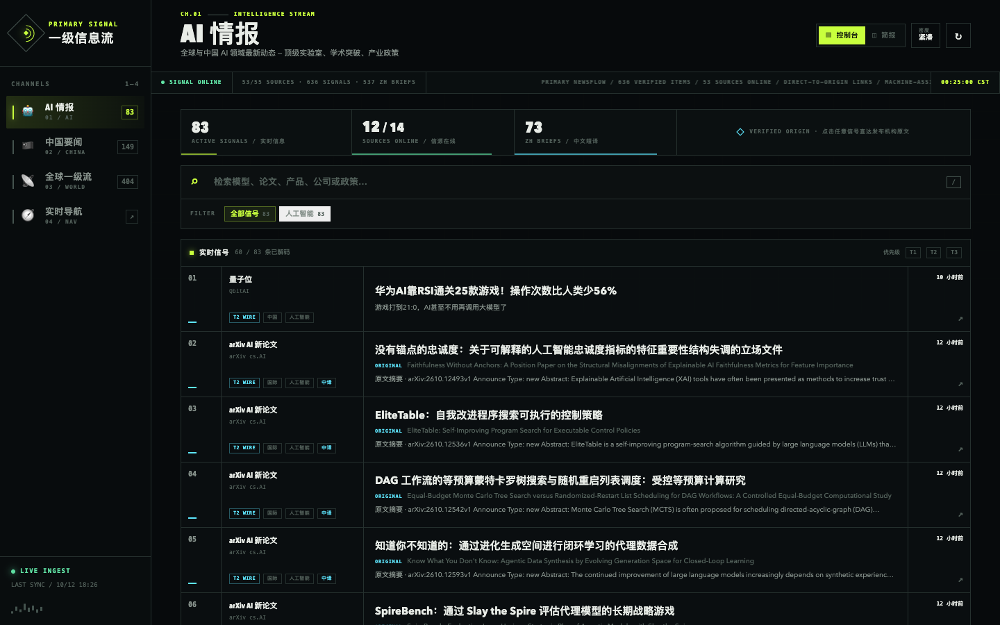
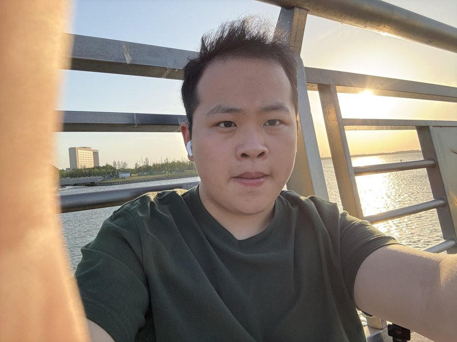
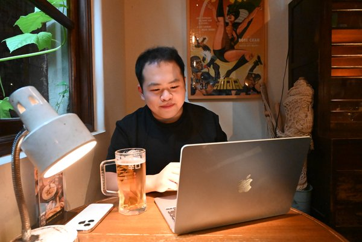
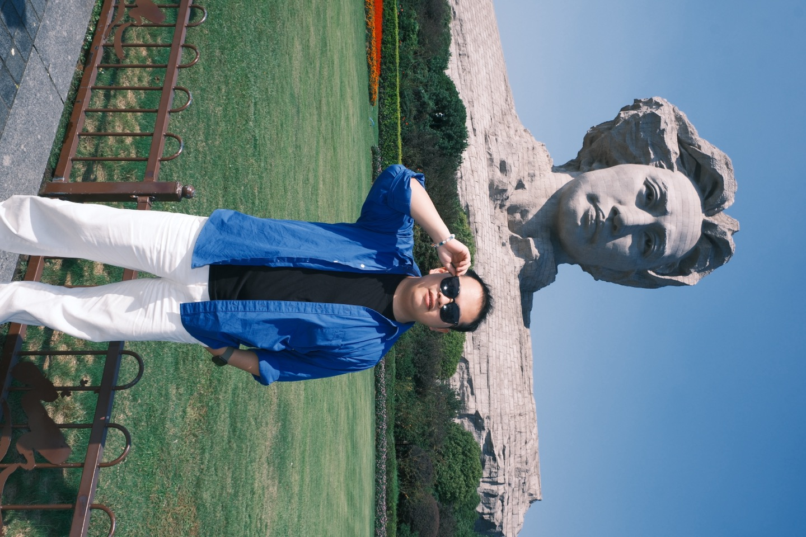

一级信息流
Primary Newsflow
让零散的信息，回到有出处的阅读。
聚合 AI、科技与时事信息，用控制台和编辑简报两种阅读方式，兼顾快速扫读与集中阅读。外文标题提供中文短译，并保留原始出处。
把想法做成作品，
把日子过得有意思。
在业务、技术与人的交点上探索。
做 AI
应用、搭业务系统，也用镜头留下生活。
字节跳动 · 飞书商业化
AI 企业能效咨询实习



Primary Newsflow
让零散的信息，回到有出处的阅读。
聚合 AI、科技与时事信息，用控制台和编辑简报两种阅读方式，兼顾快速扫读与集中阅读。外文标题提供中文短译，并保留原始出处。
A little better, every day.
把计划、记录与回顾，放在同一个地方。
围绕训练、饮食和日常习惯设计个人管理应用，整合每日概览、训练、饮食、进度、行为记录与知识库六个模块。
